Here are some skills I can use in the future to benefit my UX work
My dream jobs over time: third grade - car designer, middle school - architect, high school - web designer. Aesthetics have always intrigued me whether it's interior design, cars, products, photography, TV graphics, buildings, or even cities. I've always had an eye for when things are visually off and I'm still not sure where it comes from. I don't always get it right on the very first try, but my ability to tell when something is right or a bit weird allows me to retry until it's good.
Here's some bits of interfaces I have designed that showcase my ability to balance color, position, size, and visual weight.
Here's some bits of interfaces I have designed that showcase my ability to balance color, position, size, and visual weight.
click to expand
One of my favorite parts of UX is the delight portion. It's one thing to make something that accomplishes the functional goal of a product, but elevating it to an enjoyable experience is way more fun (for designers and the users).
Here are some ways I've thought outside the box to make an experience for others more enjoyable.
Here are some ways I've thought outside the box to make an experience for others more enjoyable.
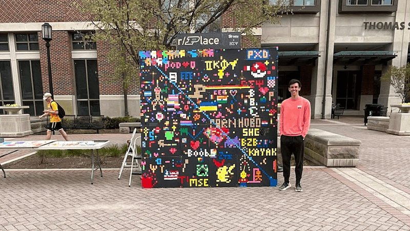
During the spring semester of my junior year at Purdue, I was the philanthropy chair for my fraternity Beta Sigma Psi. Most events were pretty rinse and repeat: food, sports tournaments, and alumni fundraisers, but I wanted to do something different that brought a bit of fun to people as they were going about their day.
With the help of some friends, I created an 8x8 ft. canvas out of plywood and poster board. With a 1x1 inch grid, people could fill it with stickers from the table on the left. We set it up and took it down each day for four days and watched it eventually get filled with art from students around the campus. We also raised $450 for Habitat for Humanity in the process.
After the four days were over, my face was a little sore because I literally smiled so much during it. I definitely lost some of my voice also. The best part of the whole week was hearing people say things like "this is one of the coolest things I've seen someone do here" or "I really needed something like this". Even a lot of people I didn't talk to smiled as they walked past having recognized some of the 'cultural' bits on the board.
Although the pixel canvas idea was Reddit's and not mine, it took a lot of effort and teamwork to create a practical version of this in real life that made students willing to take time out of their day to interact with it.
With the help of some friends, I created an 8x8 ft. canvas out of plywood and poster board. With a 1x1 inch grid, people could fill it with stickers from the table on the left. We set it up and took it down each day for four days and watched it eventually get filled with art from students around the campus. We also raised $450 for Habitat for Humanity in the process.
After the four days were over, my face was a little sore because I literally smiled so much during it. I definitely lost some of my voice also. The best part of the whole week was hearing people say things like "this is one of the coolest things I've seen someone do here" or "I really needed something like this". Even a lot of people I didn't talk to smiled as they walked past having recognized some of the 'cultural' bits on the board.
Although the pixel canvas idea was Reddit's and not mine, it took a lot of effort and teamwork to create a practical version of this in real life that made students willing to take time out of their day to interact with it.

In the gaming community, it's popular to try and get pro players or content creators to put a comment on your gamer profile - akin to an autograph in real life. Before driving to Dallas for the Rocket League World Championship in August 2022, I used inspect element to hide the comments on my steam profile (the main platform for playing Rocket League on PC). After elongating the profile in Photoshop, I used Walmart's printing services to get a physical version of my profile for others to sign.
The poster was overwhelmingly successful and nearly everyone that signed it said they haven't seen an idea like this before and that it was one of the coolest things they've seen at the event. Every time I gave it to someone to sign, they almost immediately smiled and starting laughing which was one of the goals in the first place - to give the personalities something refreshing and new to break up the same old t-shirt or selfie with a fan.
The poster was overwhelmingly successful and nearly everyone that signed it said they haven't seen an idea like this before and that it was one of the coolest things they've seen at the event. Every time I gave it to someone to sign, they almost immediately smiled and starting laughing which was one of the goals in the first place - to give the personalities something refreshing and new to break up the same old t-shirt or selfie with a fan.
Something I've always been proud of with myself is my ability to pick up on new things quickly. I'm not afraid to try something I don't know how to do yet, and once I do try it for the first time, I can gain competence pretty quickly.
Along with the all the bits from the other skills that I've learned on my own (design, coding, animation, modeling), here are some hobbies that took my own research and practice to improve.
Along with the all the bits from the other skills that I've learned on my own (design, coding, animation, modeling), here are some hobbies that took my own research and practice to improve.
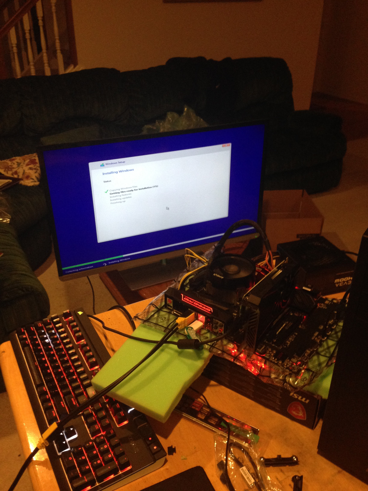
In 2017, I built my first computer just with YouTube videos, but it was not as straightforward as I thought it would be. It took a long time to get it working through troubleshooting. After finding out the motherboard was faulty, I ended up getting a replacement and it worked for the first time as shown on the left.
The second round years later went a lot smoother haha.
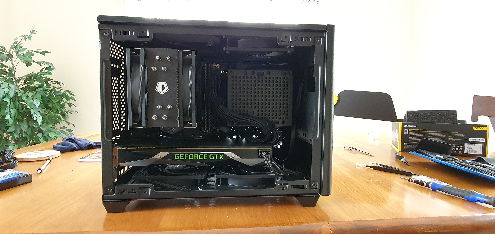
The second round years later went a lot smoother haha.
When I was much younger, I developed a bit of a piano ability. I tried taking some classes but stopped because I didn't enjoy trying to read music. My piano interest flatlined for a long time until junior year in college where I picked up the organ.
I was pretty bad at first, but through lots of practice I was able to play my first song with an audience as well. The video shown is the third and most recent song I learned.
I was pretty bad at first, but through lots of practice I was able to play my first song with an audience as well. The video shown is the third and most recent song I learned.
While I can't go off and create a machine learning algorithm with Python, I've used enough C++, HTML, CSS, Java Script, and Lua to understand the basics of code structure and how they can enable or limit certain interactions digitally. This allows me to better communicate with developers and think about what they would need to be concerned with in the creation of designs.
Here are some things I've created through different languages.
Here are some things I've created through different languages.
HTML & CSS
One of my school projects in UX was to remake an existing website from scratch with HTML and CSS and this is my result of redesigning deskpass.com. I did not design any bits on it, but everything you see in the video was coded by myself.
One of my school projects in UX was to remake an existing website from scratch with HTML and CSS and this is my result of redesigning deskpass.com. I did not design any bits on it, but everything you see in the video was coded by myself.
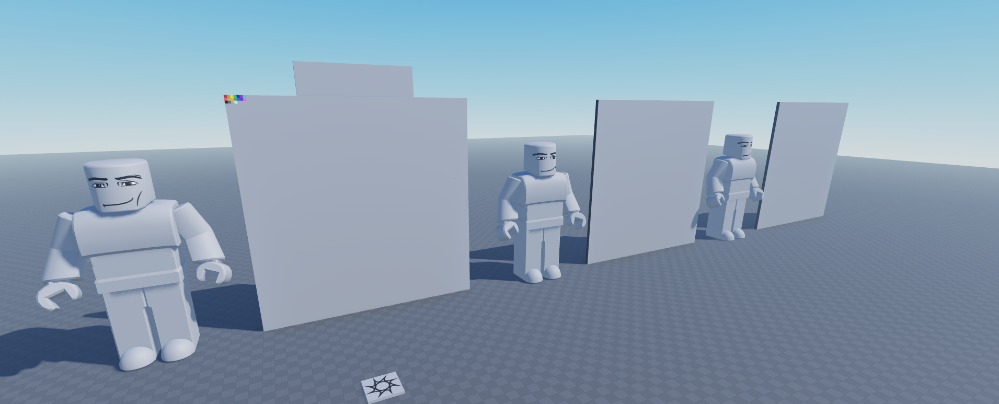
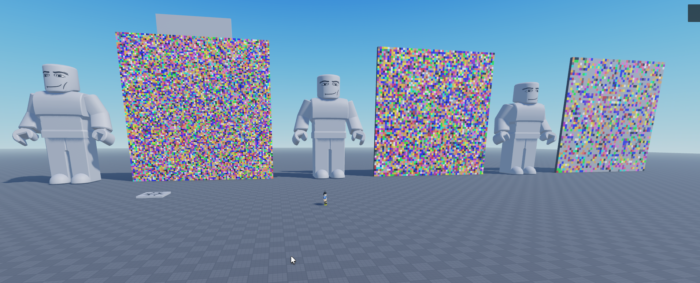
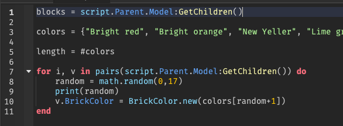
Lua
When planning my r/place event, I used Roblox Studio to map out the sizing of the board and squares. I used my knowledge of coding to quickly illustrate what a full board might look like to compare different sizes to find a balance that allowed for complex art while making it easier to fill the board.
When planning my r/place event, I used Roblox Studio to map out the sizing of the board and squares. I used my knowledge of coding to quickly illustrate what a full board might look like to compare different sizes to find a balance that allowed for complex art while making it easier to fill the board.
Lua
This was a project I worked on for a bit in 2018 within Roblox Studio. In Roblox, all of the UI interactions are coded rather than visual prototyping like in Figma. This one involved some more advanced UI interactions that I learned from the dev forums.
Here's some of the code involved with the interface. It's not there so you can read it, just to show the complexity involved.
This was a project I worked on for a bit in 2018 within Roblox Studio. In Roblox, all of the UI interactions are coded rather than visual prototyping like in Figma. This one involved some more advanced UI interactions that I learned from the dev forums.
Here's some of the code involved with the interface. It's not there so you can read it, just to show the complexity involved.
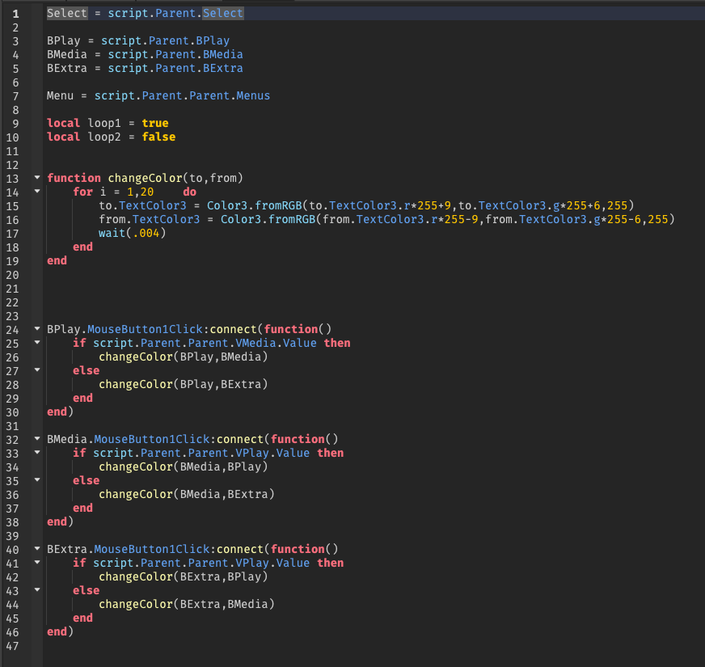
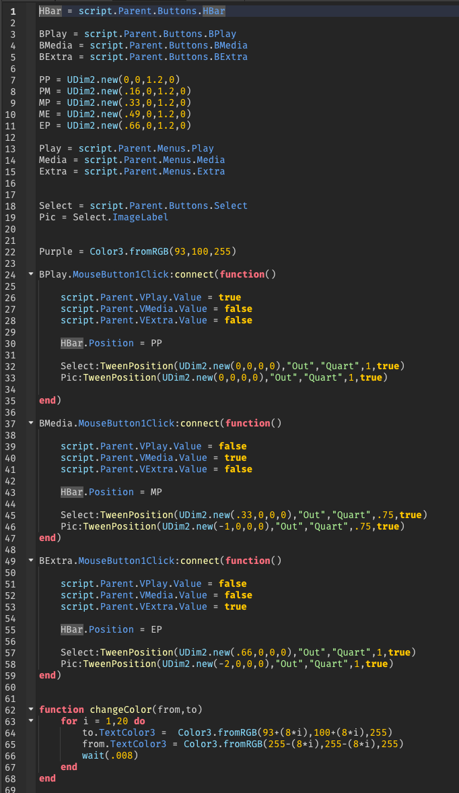
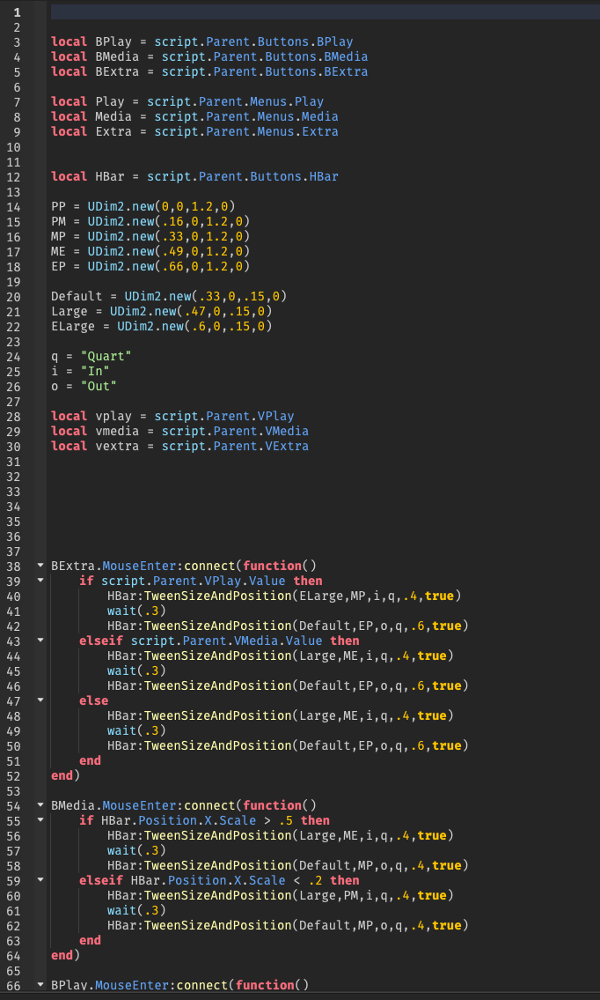
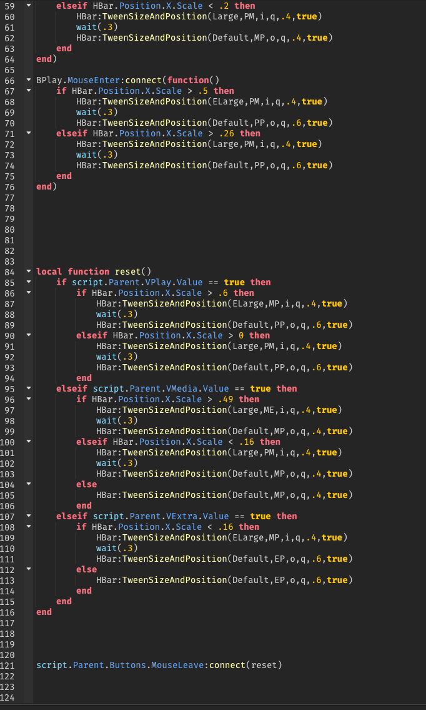
This is another area where I can't do everything, but I can understand what how things work and what causes parts to be successful over others. The only difference with visual design is that time is involved; I'm able to dissect what makes an animation pleasing to the eye and tinker with it until it's satisfying and effective.
Here is some of my work from my time working with College Carball Association: an online community that runs collegiate Rocket League tournaments and streams. All were made in Adobe After Effects.
Here is some of my work from my time working with College Carball Association: an online community that runs collegiate Rocket League tournaments and streams. All were made in Adobe After Effects.
Transition used for changing scenes in broadcast
Discord server icon
includes audio
Sponsor and logo presentation for broadcast intro
Similar to coding: I won't be able to get a job as a asset creator for the next Call of Duty, however I understand the 3D space on computers and the process of how models get made within CAD software and game engines. This may allow me to create basic graphic assets in the future or communicate spatial ideas with other team members. In a previous internship, I used Roblox Studio once to visualize background banners for a space at a conference.
Here are some projects I've worked on that demonstrate my ability to create in the 3D space.
Here are some projects I've worked on that demonstrate my ability to create in the 3D space.
Roblox
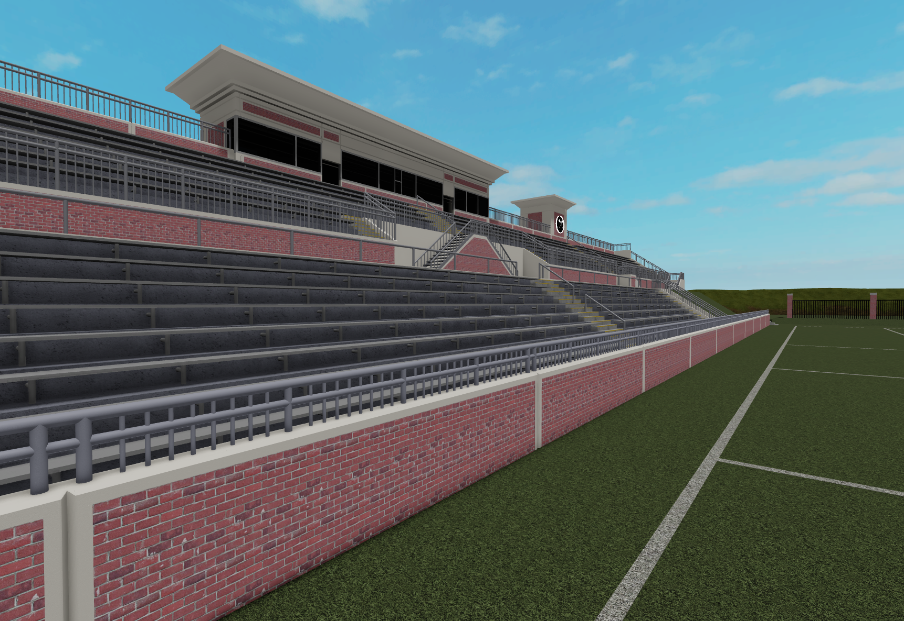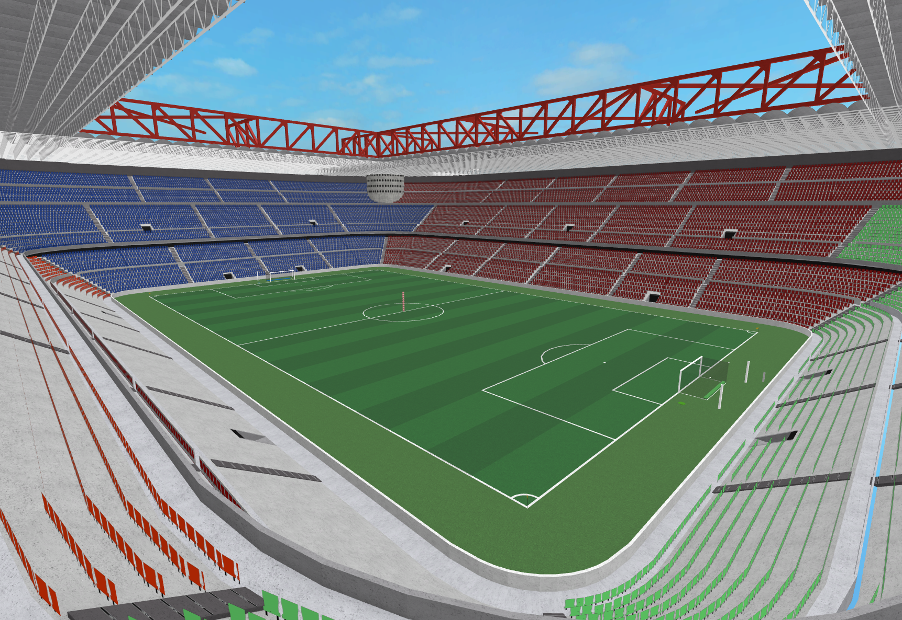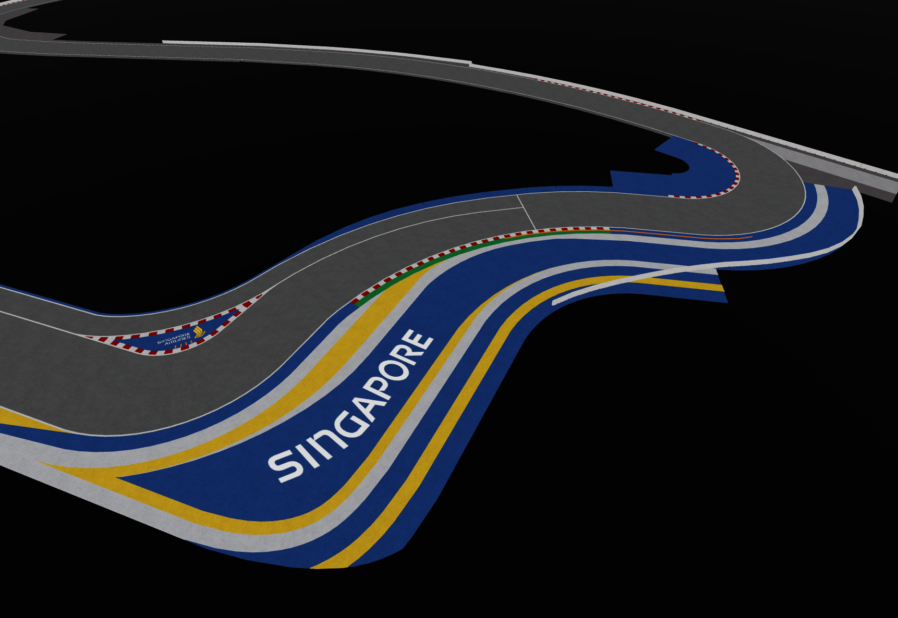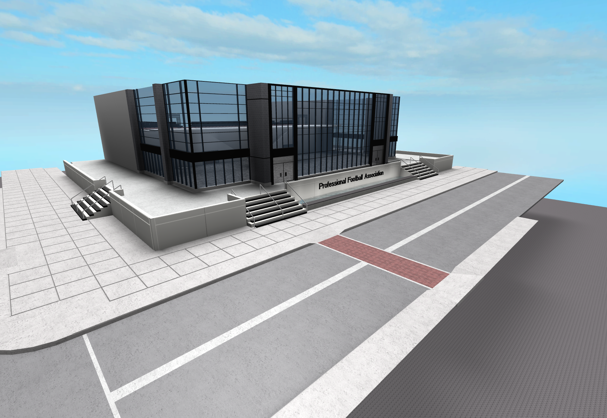
Maya - plant recreation
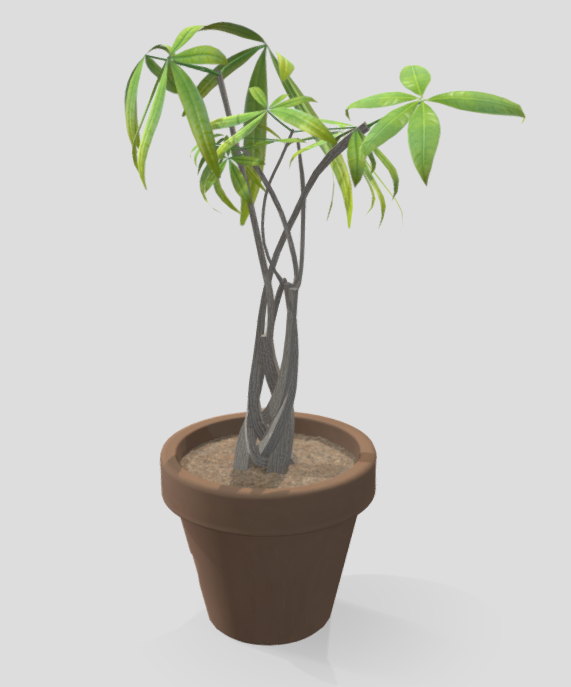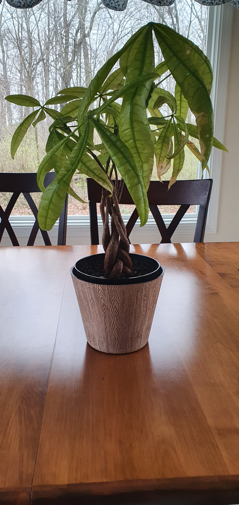